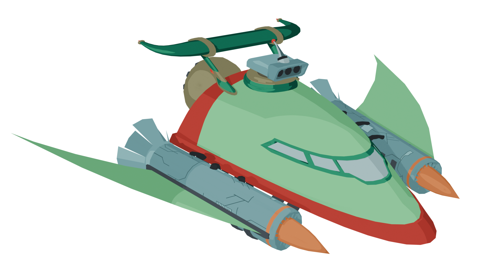
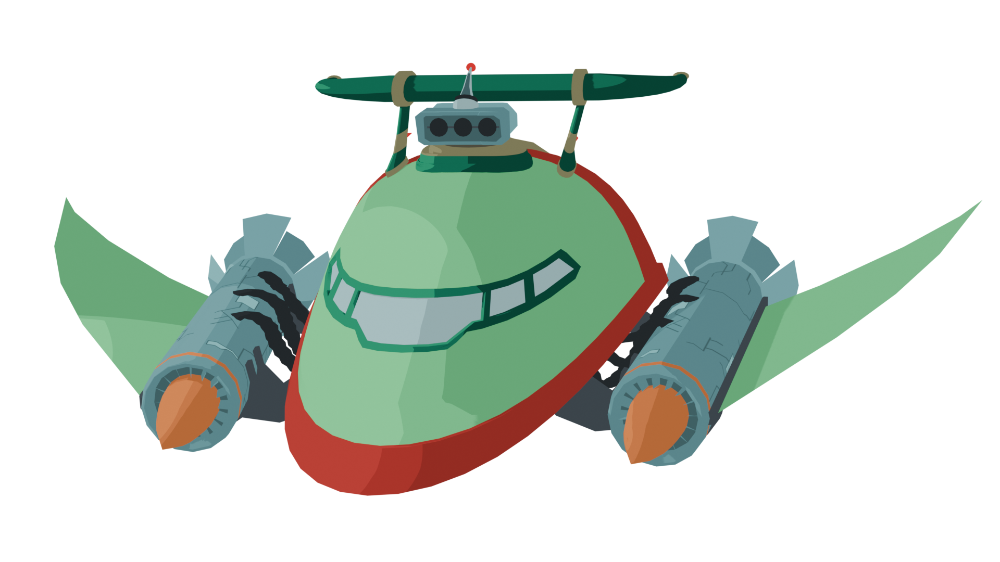

I have over 1 year of experience modelling in blender, mostly game assets.
Exhibit A: Vacpack

model viewer doesn't support neon and cool glass :(
This was made for my game, Cube Rancher, which you can find in the Lua & Luau showcase.
Exhibit B: P.E. Hotrod
 
A reacreation of street racing Planet Express ship, as seen in Futurama Season 7 ep 15.
This was made mostly for fun and because I wanted to.